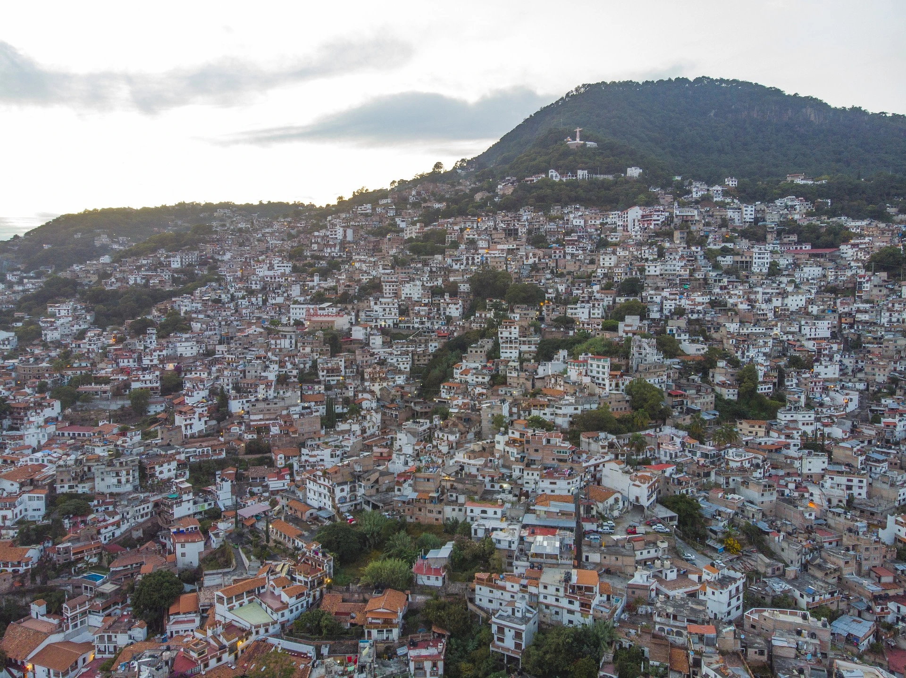

El uso de drones en la creación de spots publicitarios ha abierto nuevas posibilidades para las empresas, permitiendo capturar imágenes y videos impactantes desde perspectivas únicas. Estos dispositivos, equipados con cámaras avanzadas, transforman la manera en que se producen los anuncios.
Uno de los mayores beneficios es la capacidad de lograr tomas aéreas impresionantes. Estas vistas panorámicas y dinámicas hacen que cualquier spot publicitario destaque, capturando y reteniendo la atención del espectador de manera efectiva.
Además, los drones son más asequibles y fáciles de operar en comparación con métodos tradicionales como helicópteros o grúas. Esto permite a las empresas, independientemente de su tamaño, acceder a técnicas de filmación de alta calidad sin incurrir en grandes costos.
La flexibilidad y rapidez en la producción es otra ventaja significativa. Los drones pueden ser desplegados rápidamente y adaptarse a diferentes condiciones ambientales, lo que agiliza el proceso de filmación y permite lanzar campañas en menos tiempo.
Finalmente, utilizar drones añade un toque de innovación y modernidad a los spots publicitarios. La tecnología avanzada proyecta una imagen de vanguardia, fortaleciendo la percepción de la marca y atrayendo a un público más amplio y diverso.
